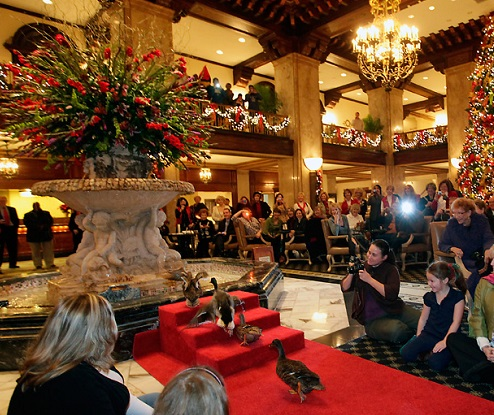
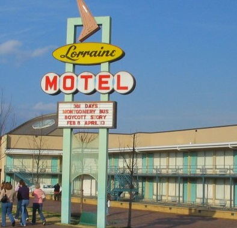
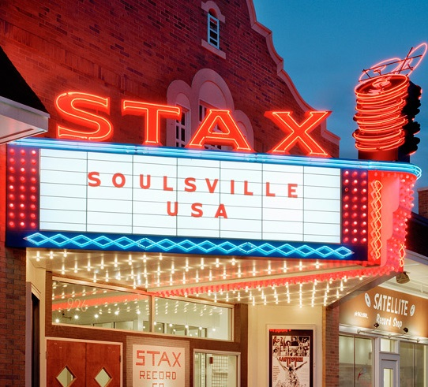
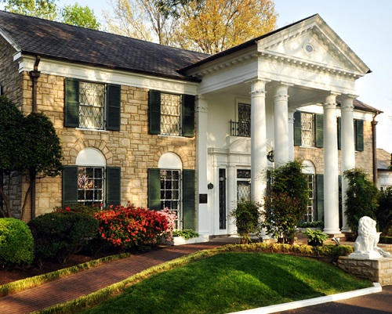
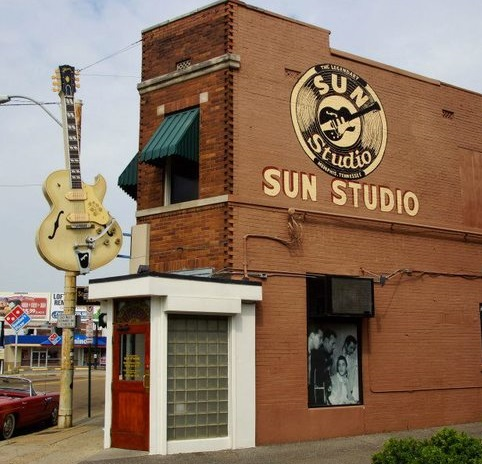
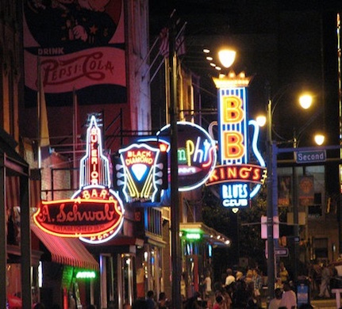
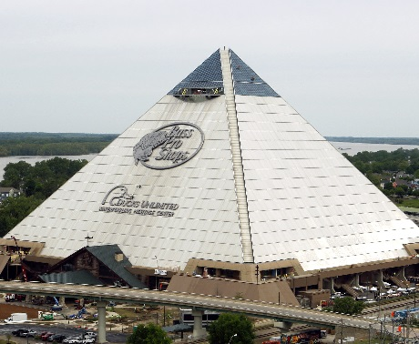

Memphis
We hope you’ll explore and eat your way through Memphis while you’re in town. Here are some of our favorite activities:

Duck March at the Peabody
Address: 149 Union Ave, Memphis, TN 38103
Cost: Free! And you should treat yourself to a cocktail while you watch
Hours: Daily, 11:00am & 5:00pm
Link: Duck March
How did the tradition of ducks in The Peabody fountain begin? In 1940 the original duckmaster and former circus animal trainer, Bellman Edward Pembroke, began bringing the ducks to the fountain each day and taught them the now-famous Peabody Duck March. When off-duty, the ducks live in their Royal Duck Palace on the rooftop which you can visit! The $200,000 structure is made of marble and glass and includes a small replica of the hotel. Duck is not served anywhere at The Peabody. Good news!

Civil Rights Museum
Address: 450 Mulberry St, Memphis, TN 38103
Cost: $15 adults
Hours: 9:00am - 6:00pm
Link: Civil Rights Museum
The National Civil Rights Museum is a complex of museums and historic buildings including the Lorraine Motel to honor the site where Dr. Martin Luther King was assassinated. Exhibits trace the history of the Civil Rights Movement in the United States from the 17th century to the present. This is an incredible museum and definitely worth a visit if you can only make it to one museum during your stay.

The Stax Museum of American Soul Music
Address: 926 East McLemore Avenue, Memphis, Tennessee Cost: $13 adults Hours: 10:00am-5:00pm (Mon-Sat), 1:00pm-5:00pm (Sun) Link: Stax Museum
The Stax Museum is the world’s only museum dedicated to preserving and promoting the legacy of American soul music, which is the best music. Located on the original site of the Stax Records studio, the museum pays special tribute to the artists who recorded there, including: Otis Redding, Isaac Hayes, Booker T & the MGs, Sam & Dave, and Mavis Staples.

Graceland: The Home of Elvis Presley
Address: 3765 Elvis Presley Blvd., Memphis, TN 38116
Cost: $38.75 for basic tour. Other (more expensive) tours available
Hours: 9:00am - 5:00pm (Mon-Sat), 9:00am - 4:00pm (Sun)
Website: Graceland
Graceland was the home and estate of Rock and Roll music legend, Elvis Presley, our King. When you enter Graceland, you’ll follow in the same steps as Elvis himself on an iPad tour narrated by John Stamos, featuring commentary and stories by Elvis and his daughter Lisa Marie. See where Elvis lived, relaxed and spent time with his friends and family. It’s fairly tacky by today’s standards, but still pretty cool to see.

Sun Studios
Address: 706 Union Avenue, Memphis, TN 38103
Cost: $12
Hours: 10:00am – 6:00pm (Daily)
Website: Sun Studios
Delve into more than 50 years of history at Sun Studio, the birthplace of Rock & Roll. Step back in time to when legends like Elvis, Johnny Cash, and Jerry Lee Lewis recorded albums that made their mark on the history of music. Sun Studio is one of the most famous and important recording studios in the world for a very good reason—this is the place where the blending of blues and country tunes gave birth to rock 'n' roll. A very good place to buy a T-shirt.
Memphis Rock & Soul Museum
Address: 191 Beale St, Memphis, TN 38103
Cost: $12
Hours: 10:00am – 7:00pm (daily)
Website: Rock and Soul
The Memphis Rock ‘n’ Soul Museum’s exhibition about the birth of rock and soul music, created by the Smithsonian Institution, tells the story of musical pioneers who, for the love of music, overcame racial and socio-economic barriers to create the music that shook the entire world.

Beale Street
Cost: Free, but no guns allowed
Hours: All the time, best at night
Beale Street runs from the Mississippi River to East Street for a distance of about 1.8 miles. It’s a significant location in the history of Memphis and the blues. Walk around, drink a Big Ass Beer, listen to some live music, watch the Beale Street Flippers, and enjoy being in the South. We’ll be going out here after the wedding, so stay tuned!

Bass Pro Shop
Address: 1 Bass Pro Dr, Memphis, TN 38105
Cost: Free, but you may end up leaving with a camo bathing suit
Hours: 8:00am - 10:00pm
Link: Memphis Location
Housed in the massive iconic Pyramid where the Memphis Grizzlies used to play, this is a monstrosity. In addition to the typical outdoor retail gear sold by Bass Pro Shops, this place includes a wilderness hotel called Big Cypress Lodge, nearly 600,000 gallons of water features, a cypress swamp with 100-foot-tall trees, live alligators, and an observation deck with the best view of Memphis, accessed by North America’s tallest free-standing elevator. It’ll cost $10 to ride to the top, but there’s a good place to grab a drink once you’re there. None of this is a joke.
BBQ
In no particular order, the following spots are confirmed to be delicious and highly recommended.
Vegetarian food: Nope.